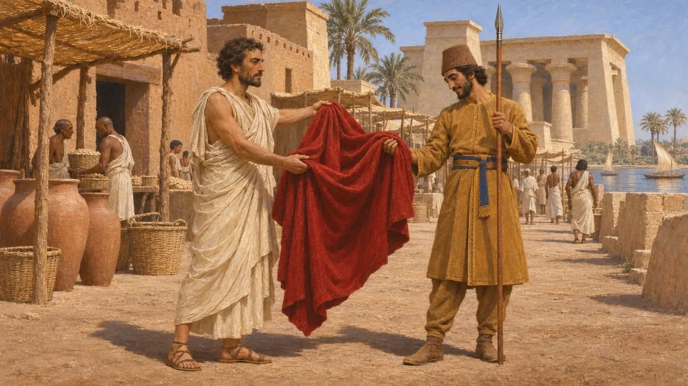
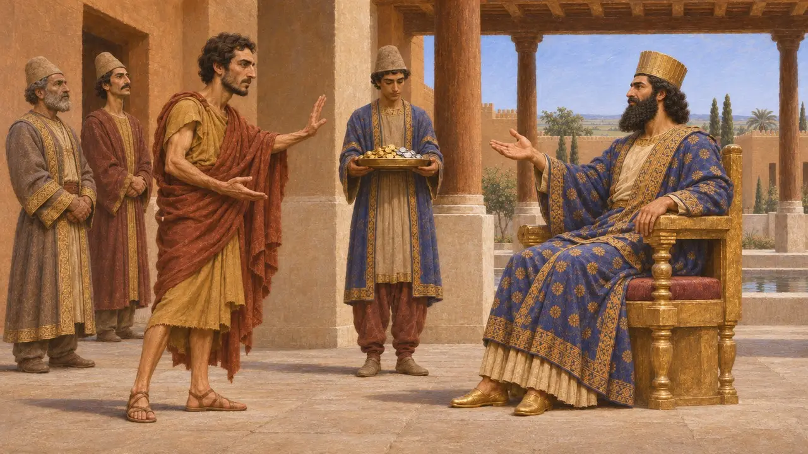
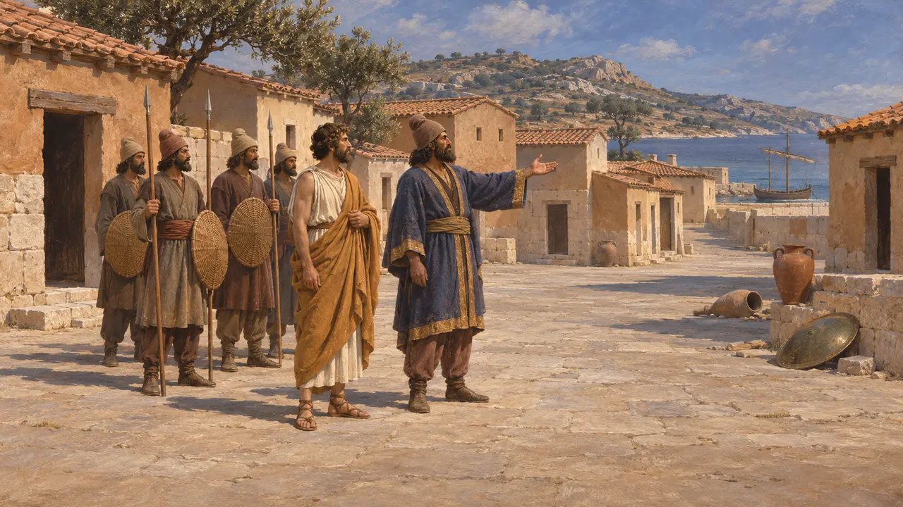
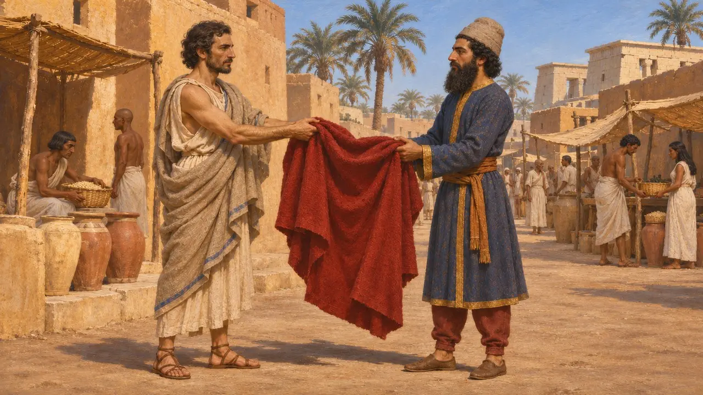
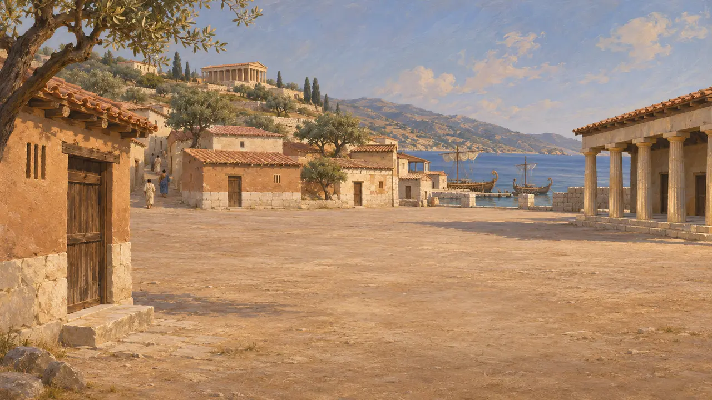

Syloson de Samos
Exilé devenu tyran de Samos avec le soutien des Perses, vers 520-517 av. J.-C.
Dans le jeu : Niveau 2 : Le Porte-lance
Syloson était un frère de Polycrate, le tyran de Samos. Hérodote raconte qu'il offrit un manteau rouge au jeune Darius en Égypte, et que Darius, plus tard, le fit souverain de Samos à l'aide d'une force perse. Cette histoire est le récit grec de la manière dont un service fut rendu à la cour perse.
Dans le jeu : Le jeu nomme Syloson dans les entrées de la Chronique et dans les articles d'événements de l'Encyclopédie, mais pas dans un niveau qui lui soit propre, et il n'a aucune mécanique. L'entrée sur le marché de Memphis mentionne le moment où il donna son manteau rouge au jeune Darius.

Le manteau à Memphis
Récit antiqueSelon Hérodote, Syloson avait été chassé de Samos par son frère Polycrate et se trouvait en Égypte avec l'armée de Cambyse. Il se promenait sur le marché de Memphis, vêtu d'un manteau rouge, lorsque Darius, alors porte-lance dans la garde de Cambyse et sans rang, l'admira et voulut l'acheter. Syloson le lui donna en présent.
Herodotus 3.139

Darius rend le présent
Récit antiqueHérodote raconte qu'après l'accession de Darius au trône, Syloson vint à Suse et se présenta comme l'homme qui lui avait donné le manteau. Darius le remercia et lui offrit de l'or et de l'argent. Syloson demanda à la place Samos, qu'il voulait voir prise sans effusion de sang ni mise en esclavage.
Herodotus 3.140

La conquête perse de Samos
Récit antiqueSelon le récit d'Hérodote, Otanès conduisit une armée perse à Samos et prit l'île après des combats où périrent de nombreux Samiens. Syloson reçut l'île, qu'Hérodote décrit comme en grande partie vidée de ses habitants. La date de la conquête n'est pas certaine ; on la place généralement vers 520-517 av. J.-C.
Herodotus 3.141-149

Quelle est la fiabilité du récit
ContestéSeul Hérodote rapporte l'épisode du manteau, et celui-ci a la forme d'un conte moral sur la gratitude. Les historiens admettent que Samos passa sous contrôle perse et eut, à cette époque, un souverain soutenu par les Perses. Rares sont ceux qui tiennent pour établis les détails du manteau, la scène du marché ou le rang qu'occupait alors Darius.
P. Briant, From Cyrus to Alexander, 2002

Un proverbe sur Syloson
Légende tardiveStrabon et d'autres auteurs tardifs ont conservé un dicton grec au sujet de Syloson et des vastes espaces libres, qu'ils expliquaient par le dépeuplement de Samos. Cette explication fut consignée longtemps après son époque et relève mieux de la tradition populaire que d'une preuve de ce que fit Syloson.
Strabo, Geography 14.1
Sources
- Herodotus 3.139-149
- P. Briant, From Cyrus to Alexander, 2002
- Strabo, Geography 14.1
- Herodotus 3.39